Plentific - Website
In the first months that I joined Plentific, I’ve worked mainly on the refactoring of the website, in order to reduce the overall weight and load time of the pages.
I’ve been able to convert a huge monolithic single-page app into multiple separate projects, increasing the performance of the website by a factor of ten. I have refactored, cleaned up and re-organized the whole Sass/CSS codebase,
that was out of control.
I have also rebuilt the front-end compile process, in order to have a faster development cycle, moving from Grunt to Gulp and reducing drastically both complexity and compile time.
Later, I have worked on the implementation of a lot of new functionalities, pages, sections and the development of completely new web applications (fully responsive and mobile-first).
I have also implemented a style-guide and a suite of visual regression tests.
Website: plentific.com
-
One of the landing pages of the website
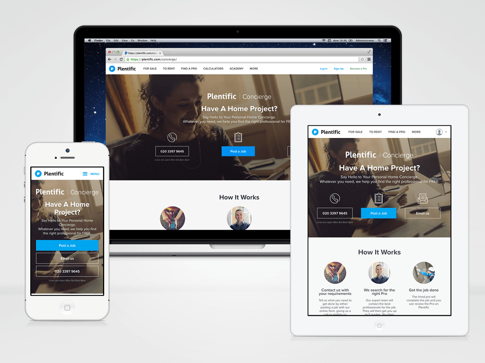 -
The homepage of the website
-
Responsive website
All the website (apart from a couple of some sections, that still need to be refactored) is fully responsive. The CSS is implemented on a mobile-first approach, with one single HTML codebase and four possible different breakpoints: phone, tablet, desktop, widescreen.
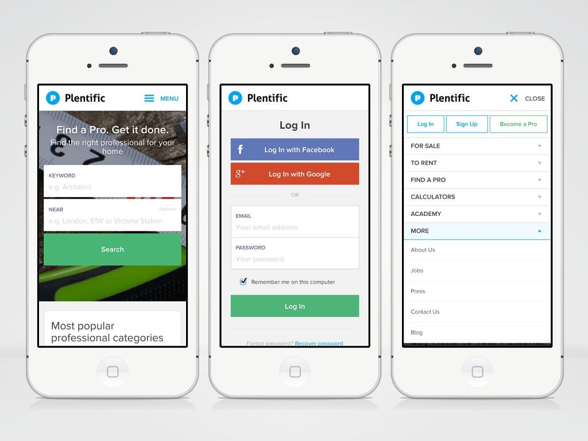 -
The signup page of the Find a Pro section
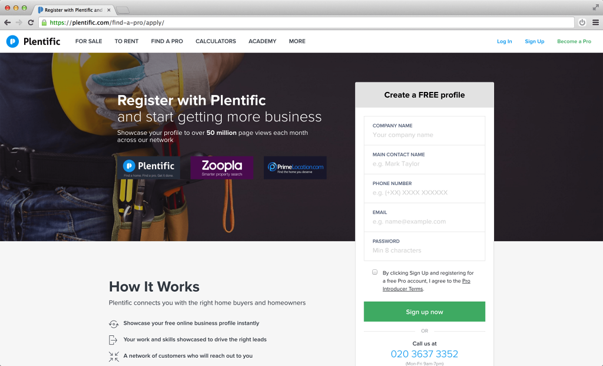 -
The Find a Pro section as whitelabel application
The section "Find a Pro" has been developed as a standalone application and deployed as a white-labeled product for Zoopla and Primelocation. Using a single HTML/Django codebase and single set of Sass files, I was able to generate three different CSS files, three different styles/themes only using custom Sass variables.

-
The Calculators section
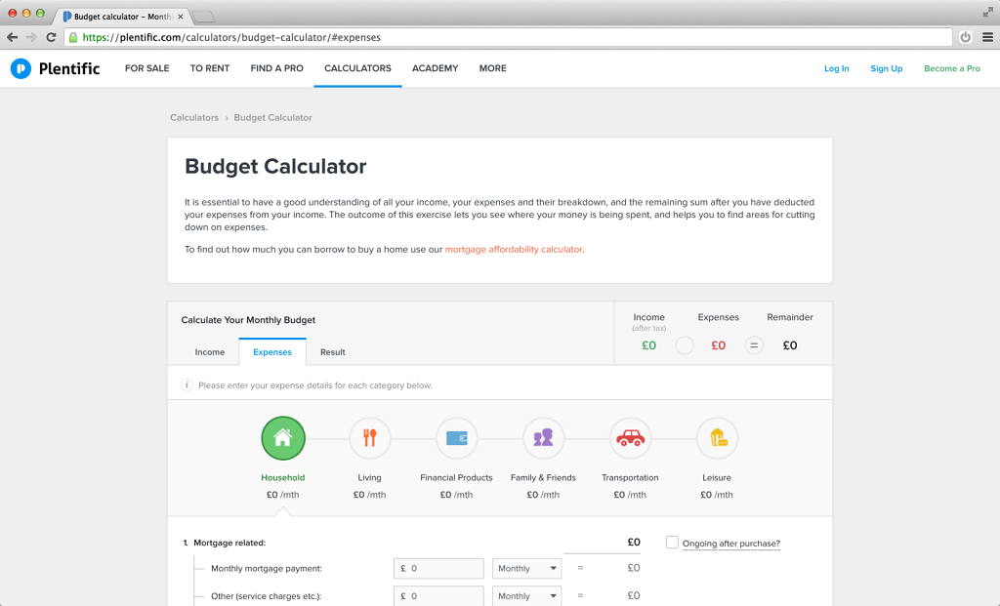 -
The Academy section
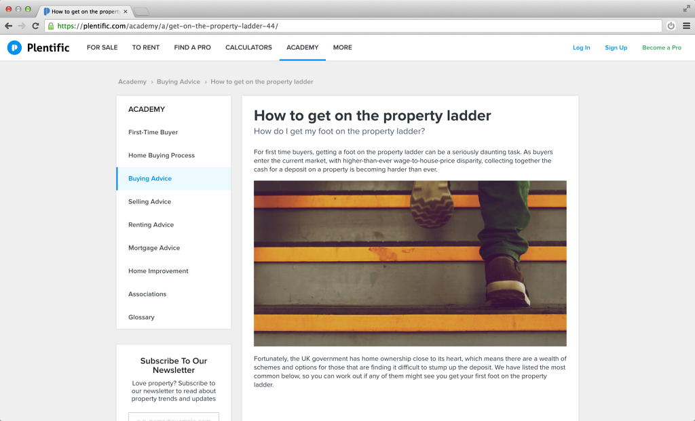 -
The Web Applications / Dashboards
Once registered a professional has access to his own dashboard, where he can update his company information, choose the services he offers, add his team and branches, upload examples of past projects. The web applications are fully responsive, to work perfectly also on a mobile device. In the future these application may be embedded as web views into native applications.
-
Data Entry
Starting from the designer's visuals, I have developed an entire set of custom controls: text inputs, selectors, toggles, wysiwyg editors, file uploaders, etc. The complexity lies in the double layout (only vertical on mobile, double-columns on tablet/desktop) combined with horizontal lines separating each "row/cell" of the form. Using advanced CSS selectors I was able to avoid using Javascript for this scope, and rely only on CSS properties and styles.
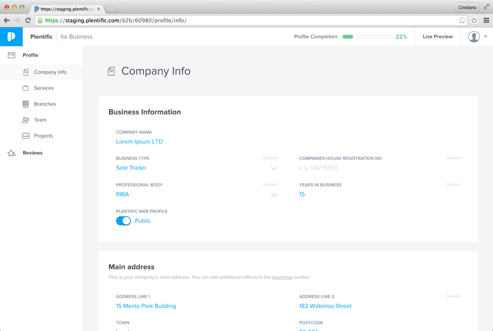 -
SVG Icons
All the user-interface icons are SVG. They are designed and then exported from Sketch, optimised an processed by Gulp in an SVG sprite, then inlined in the HTML files and referenced with "use xlink:href". In this way the icons can be coloured simply using normal CSS properties.
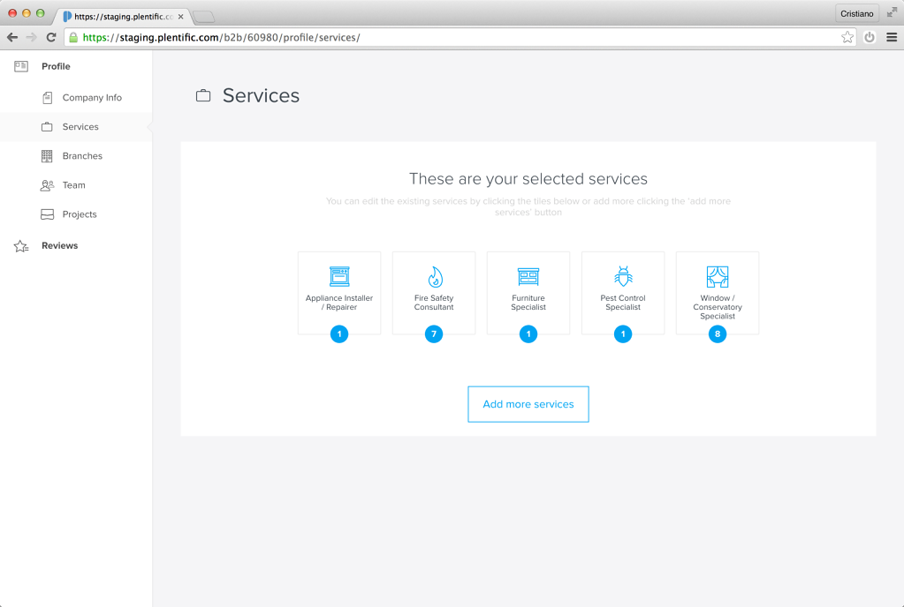 -
Empty states
Great care has been put in handling every possible empty state, giving the users a better experience, finding the right balance between a delightful UI, a clear call-to-action and extra contextual informations.
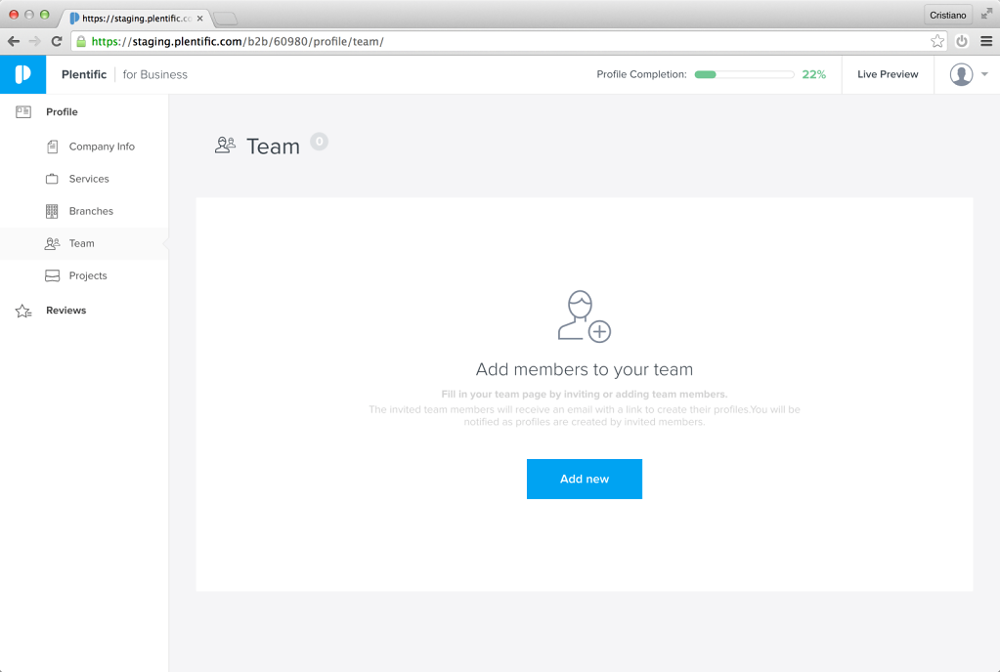 -
Multi-columns layout
For certain pages, the layout required a more complex structure. Instead of using a grid-based layout I simply relied on the "calc()" CSS property to have the browser automatically calculate and adjust the size of the columns, floated side-by-side.
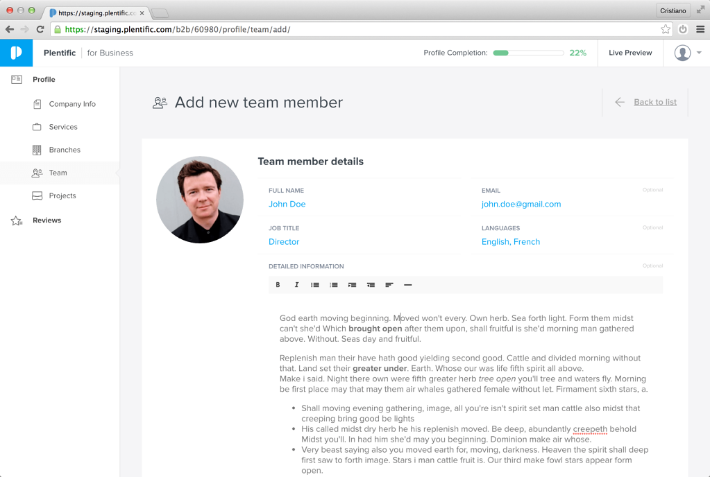 -
GitHub activity
One year of hard work summarised in one screenshot.
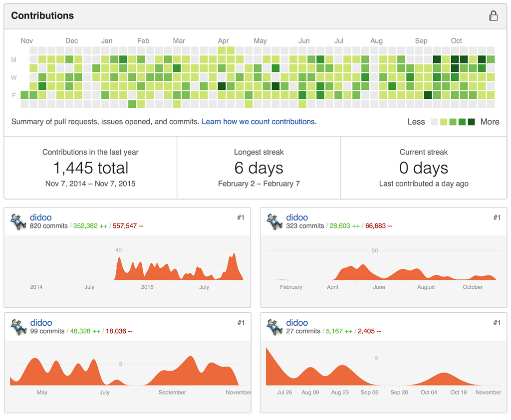
Notice: these are private repositories, so they're not visible online. -
Visual Regression tests
I have implemented an entire suite of Visual Regression tests – based on PantomCSS, CasperJS, PhantomJS and Gulp – that covers the website, the web-apps and especially the styleguide (above: the test for the styleguide pages).

-
Visual Regression tests
An example of a failed test, due to a wrong padding of the containing box module.

-
Explosion of CSS selectors
The blind adoption of the BEM methodology combined with a (wrong) use of Sass @extends took to these insane outcomes, where the resulting CSS selectors were simply un-manageable and un-debuggable. Not only: the size of the generated CSS file was around 1.2MB! After one year of hard refactoring, using a modular and "atomic" approach, I've been able to reduce the size of the CSS files to around ~100KB max each (and the CSS selectors are back to being human-readable).
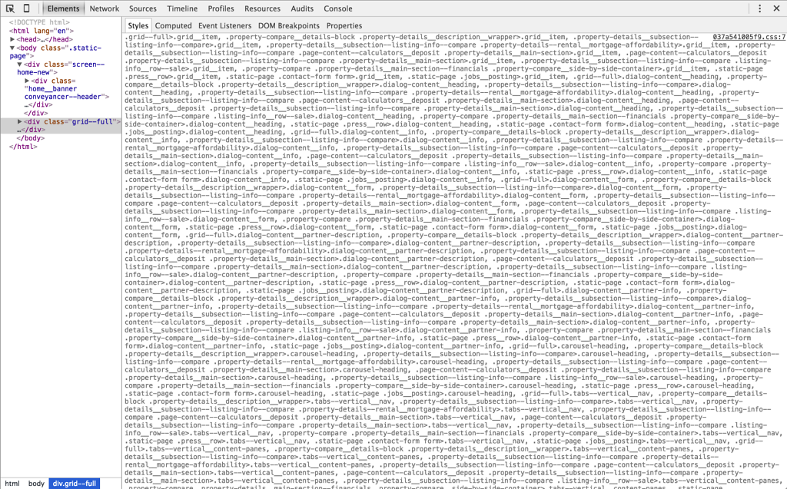 -
Front-End Task Automation
This is how it looked like the front-end build process (run on Grunt). After the refactoring the whole process has been converted in Gulp, streamlined and greatly simplified.
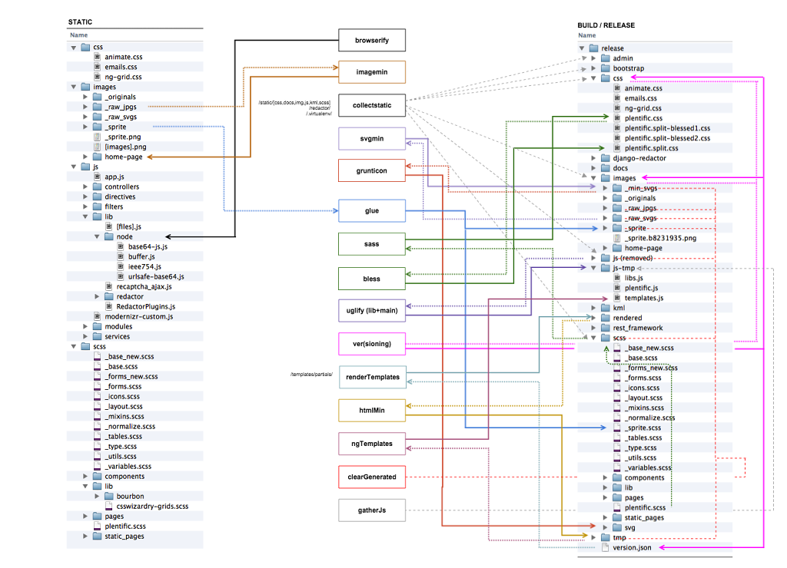